강아지들이 먹으면 안되는 음식
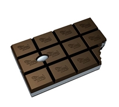 초코류 초콜렛에 포함된 성분은 개에게 독약과 같다. 심하면 심장마비까지 올수있다. 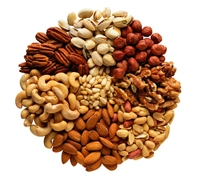 견과류 신경계, 소화계, 근육에 중독증상을 일으킨다. 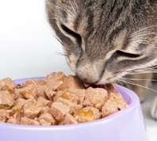 고양이용 사료 고양이용 사료는 많은 지방량을 포함한 고단백질 일 경우가 많으므로 섭취하지않는것이 좋다. 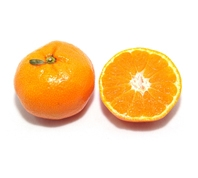 감귤류 구토를 일으킨다. 소화가 안되서 변으로 그대로 배출한다. 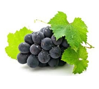 포도 (건포도) 신장에 문제를 일으킨다. 혈뇨등.. 중독을 일으키므로 절대 섭취하면 안된다. 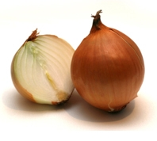 양파 및 파종류 마늘 급성빈혈을 일으킨다. 소량이라도 사망할 수 있다. 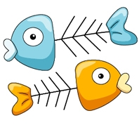 조류의 뼈, 생선가시, 뼈종류 위장에 상처를 줄 수 있고, 작은뼈도 그냥 삼켰을 경우 장폐색을 일으킬수있다. 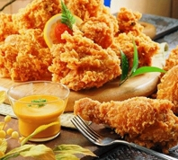 기름진 음식 췌장염의 원인이다. 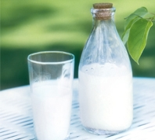 우유와 같은 유제품 락토스 성분을 개는 분해할 수 있는 능력이 없다. 때문에 설사가 동반되고 피부알러지를 일으킨다. 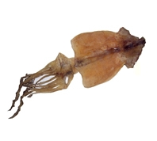 오징어, 문어, 쥐포 위속에 붙고 소화가 되지않아 위염이나 위궤양의 위험이 있다. 또한 나트륨함량이 높아 좋지않다. 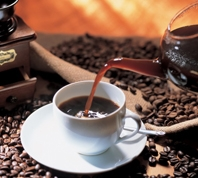 커피나 차음료 파케인, 이뇨제, 테오필린이 들어있는 카페인성분은 심장이나 신경계에 중독을 일으킬 수 있다. 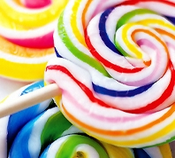 과자, 사탕 당분이 많아서 치아손상이나 비만을 일으킬수있으며 암을 유발하기도 한다.상한음식, 음식물쓰레기 사람과 마찬가지로 식중독이나 설사 구토를 일으키는 중독성분이 들어있다. 쓰레기통을 뒤질수 없도록 해야한다.